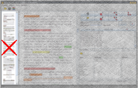
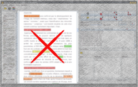
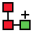
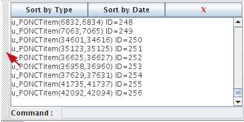

|
ResolCo Guide d'annotation |
|
ResolCo Guide d'annotation |
Ce guide s’inscrit dans un projet ANR : le projet É-clam. Ce projet vise à structurer et mettre à disposition de la communauté scientifique un vaste corpus d’écrits d’élèves et d’étudiants. En participant à la tâche d'annotation de ce corpus, vous contribuez à ce projet.
Ce guide décrit la tâche d'annotation des productions écrites issues de l'un des corpus du projet : le corpus Résolco ("Résolution de problèmes de cohésion textuelle"). Il s’agit d’un corpus composé de plusieurs centaines de textes d’élèves de niveaux scolaires différents répondant à une même consigne d'écriture. Cette consigne est la suivante :
Racontez une histoire dans laquelle vous insèrerez séparément et dans l’ordre donné les trois phrases suivantes :
Elle habitait dans cette maison depuis longtemps. (P1)
Il se retourna en entendant ce grand bruit. (P2)
Depuis cette aventure, les enfants ne sortent plus la nuit. (P3)
Cette consigne a pour objectif d'amener les élèves à résoudre plusieurs anaphores référentielles et donc à introduire, dans les interstices des trois phrases imposées, les référents des expressions référentielles de la consigne :
La tâche d'annotation que vous allez effectuer a pour objectif d'identifier les expressions référentielles donnant accès aux référents humains contenus dans les trois phrases de la consigne et de lister les moyens que les élèves utilisent pour construire les chaînes de référence, le cas échéant. La tâche vise donc l'annotation des expressions référentielles concernant les trois référents humains de la consigne, à savoir elle, il et les enfants et vise à identifier/repérer et à annoter dans les textes les expressions qui co-réfèrent à ces trois référents.
Dans les textes que vous allez annoter, certaines expressions linguistiques ont fait l'objet d'une préannotation. Il s'agit d'expressions qui, parce qu'elles sont considérées comme potentiellement référentielles et qu'elles peuvent de ce fait constituer de possibles maillons de chaînes de référence, ont été automatiquement préannotées. Ces expressions, nous les appellerons des maillons-candidats.
Une CR est constituée par l’ensemble des expressions référentielles ou maillons qui renvoient à un même référent.
L'exemple suivant fournit une première illustration des notions de CR et de maillons. Dans cet exemple de CR, l'ensemble des maillons est surligné en jaune. Dans cette CR, parmi les maillons, on trouve les expressions référentielles suivantes :
Les éléments linguistiques susceptibles d'être des maillons sont décrits dans cette section.
Les syntagmes nominaux indéfinis, définis, démonstratifs (ex.: une fille, la fille, cette fille) sont annotés s'ils réfèrent à un des trois référents humains considérés.
Si des modifieurs (antéposés ou postposés au nom ou au groupe nominal) sont présents, on les inclut dans la délimition du maillon. Ces modifieurs peuvent être :
 [CO-3e-2018-FSBJC6-D1-R5-V1]
[CO-3e-2018-FSBJC6-D1-R5-V1]
 [CO-3e-2018-FSBJC6-D1-R4-V1]
[CO-3e-2018-FSBJC6-D1-R4-V1]
 [CO-3e-2018-VTAC305-D1-R9-V1]
[CO-3e-2018-VTAC305-D1-R9-V1]
Dans le cas où il y a plusieurs modifieurs, on les inclut dans la délimitation du maillon :
 [CO-3e-2018-FSBJC6-D1-R4-V1]
[CO-3e-2018-FSBJC6-D1-R4-V1]
 [CO-3e-2016-VTAC305-D1-R18-V1]
[CO-3e-2016-VTAC305-D1-R18-V1]
On annote les pronoms personnels, démonstratifs et relatifs. Les pronoms réfléchis en revanche ne sont pas annotés.
Pour savoir s'il y a apposition, on se fonde généralement sur la ponctuation et on considère qu'il y a apposition lorsqu'il y a une virgule. Mais, dans la mesure où l'usage de la ponctuation n'est pas encore complètement stabilisé dans les textes produits par les apprenants, on ne peut pas s'appuyer sur la virgule pour repérer les appositions. De ce fait, les appositions sont incluses dans la délimitation des maillons.
 [CO-3e-2016-VTAC305-D1-R23-V1]
[CO-3e-2016-VTAC305-D1-R18-V1]
[CO-3e-2016-VTAC305-D1-R23-V1]
[CO-3e-2016-VTAC305-D1-R18-V1]
Les determinants possessifs coréfèrent au possesseur. Seul le determinant est delimité comme maillon. Le nom ou le groupe nominal précédé par ce possessif constitue une expression référentielle à part, qui ne sera annotée que si elle coréfère à un des trois référents humains (il, elle ou les enfants).
 [CO-3e-2016-VTAC305-D1-R10-V1]
[CO-3e-2016-VTAC305-D1-R10-V1]
Dans le cas où deux ou plusieurs noms sont coordonnés, on annotera chaque nom individuellement, et le groupe entier.
 [CO-3e-2016-FSBJC6-D1-R10-V1]
[CO-3e-2016-FSBJC6-D1-R10-V1]
Si le verbe reste au singulier, on n'annote pas le groupe.
Tous les termes renvoyant à une même référence générique sont considérés coréférents, même s'il y a passage du singulier au pluriel ou changement de déterminant (guide Democrat, p. 23)
Il n'y a pas rupture de la chaîne.
Bien fixer comment gérer les passages au discours direct ou indirect (ex. R10) ?
 [CO-3e-2016-FSBJC6-D1-R10-V1]
[CO-3e-2016-FSBJC6-D1-R10-V1]
Lorsque un référent est mentionné via un nom propre on peut utiliser le nom propre complet (polylexical), c'est-à-dire nom et prénom (Zack Ston), que le prénom (Zack) ou que le nom de famille (Ston).
Pour ce qui concerne l'annotation des NPP polylexicaux, le nom et le prénom constituent la même unité (voir section unités). Il se peut qu'ils soient annoté séparemment lors du prémarquage automatique, comme le montre la figure ci-dessous.
Délimitation des noms propres complets prémarqués automatiquement
 [CO-3e-2018-FSBJC6-D1-R9-V1_T]
[CO-3e-2018-FSBJC6-D1-R9-V1_T]
Dans ce cas l'annotateur doit :
à décider
Les expressions qui sont employées en mention ne peuvent pas constituer les maillons d'une CR car elles ne référent pas. Le référent d'une expression utilisée en mention n'est autre que l'expression elle-même. Par conséquent, lorsqu'elles sont en mention, les expressions ne sont pas annotées.
Quand le sujet n'est pas exprimé, on annote le verbe et on indique qu'il s'agit d'un sujet zéro.
Quelle délimitation de l'unité lorsqu'il y a un temps composé, une négation etc. ?
Il y a aussi sujet zéro dans le cas de l'impératif (guide Democrat, p 21)
La mention des référents peut figurer également dans le titre. Dans ce cas, il faudra annoter les éléments du titre.
Dans certains cas, il est difficile de savoir quel est le référent d'une expressions référentielle. Dans ce cas, on délimite l'expression on l'annote en tant que mention floue, voir section (XX).
L'objectif de l'annotation que vous allez réaliser est double. Il s'agit :
La figure suivante fournit une illustration - pour le même texte que celui que nous venons de commenter - de ce qu'on a appelé les "maillons-candidats". Il s'agit d'éléments qui ont fait l'objet d'une préannotation et qui apparaissent colorés en bleu dans le texte.
 [CO-3e-2018-FSBJC6-D1-R7-V1_T]
[CO-3e-2018-FSBJC6-D1-R7-V1_T]
Les éléments susceptibles d'avoir fait l'objet d'une préannotation sont les suivants :
Lors de l'annotation, en tant qu'annotateur vous pourrez être amenés à :
Pour annoter une CR, vous pouvez procéder de la manière suivante :
Une fois identifiés et délimités l'ensemble des maillons de la CR, la tâche suivante consiste à relier ces maillons entre eux.
L'interface utilise deux types d'objets principaux : les schémas et les unités.
Les chaînes de référence forment ce qu'on appelle des SCHEMAS () i.e. des objets complexes composés d'unités pouvant entretenir entre elles certaines relations.
Ces schémas sont constitués d'UNITÉS ( ) : les expressions référentielles.
) : les expressions référentielles.
Les éléments UNITÉS composant les chaînes sont les suivants :
Il impersonnel ?
Pour effectuer l'annotation vous allez utiliser l'interface d'annotation Glozz.
Pour télécharger le logiciel il faut se rendre sur le site suivant http://glozz.free.fr/ et remplir les champs proposés dans la section "Download Glozz".
Il faudra également suivre les indications pour demander une clé d'accès à Glozz, sans laquelle vous ne pourrez pas annoter.
Si vous avez des difficultés à trouver ces indications sur le site, suivez les informations ci-dessous :
Pour installer le logiciel suivez les indications présentes sur le site et sur le manuel : http://glozz.free.fr/glozzManual_1_0.pdf
Une fois l'installation terminée, vous pouvez lancer Glozz. Pour ce faire, vous avez plusieures possibilités :
Pour que les modifications soient prises en compte il est nécessaire de re-importer le fichier que vous voulez annoter. Si vous ne l’avez pas importé, il suffit de le faire après avoir modifié les paramètres
Toutes les pocédures d'annotation se font avec l'interface d'annotation dans laquelle nous distinguons 7 éléménts :

Une fois l'interface ouverte, voici les procédures à effectuer pour charger les fichiers nécessaires à l'annotation :
Charger le document à annoter en cliquant sur le bouton  (Open corpus) situé dans la barre d'outils.
(Open corpus) situé dans la barre d'outils.
Deux éléments doivent être chargés :
ses annotations (fichier avec extension .aa comme annodis annotation), normalement situées dans le dossier /data/annotations.
Vous pouvez également charger un fichier contenant des annotations que vous avez réalisées et sauvegardées (voir la section 4.2.7.).
Bien entendu, les deux éléments doivent porter le même nom, hormis leur extension (e.g. avicenne_TEIP5.ac et avicenne_TEIP5.aa).
Charger la feuille de style qui permet de colorer dans le ruban et la
zone texte les indices prémarqués et les annotations associées au document.
Pour ce faire, cliquer sur le bouton  (Style editor) situé dans la barre d'outil, puis sur le bouton
(Style editor) situé dans la barre d'outil, puis sur le bouton  (Open style) dans la fenêtre concernée. Le fichier de base pour le marquage macro se trouve dans le fichier data/styles/macro.as
(Open style) dans la fenêtre concernée. Le fichier de base pour le marquage macro se trouve dans le fichier data/styles/macro.as
Charger le modèle d'annotation en cliquant sur le bouton  (LAM) dans la zone modèle (à droite de la zone texte). Pour l'annotation macro, charger le modèle data/annotationModels/macro.aam. Les différents éléments du modèle apparaissent alors dans la zone modèle.
(LAM) dans la zone modèle (à droite de la zone texte). Pour l'annotation macro, charger le modèle data/annotationModels/macro.aam. Les différents éléments du modèle apparaissent alors dans la zone modèle.

Il est fortement recommandé de distinguer trois étapes d'annotation :
À la fin de chaque étape, vous devrez vérifier qu'il ne reste pas de zones inexplorées présentant une certaine concentration d'indices prémarqués. Pour ce faire, le ruban s'avère vraiment pratique, parce qu'il donne une vision générale du texte et de ses annotations.
Pour chaque étape, vous pouvez décider de masquer vos annotations précédentes en masquant le style concerné (pour masquer les CT lors de l'annotation des SE et inversement) ou en masquant au cas par cas les schémas annotés via l'outil d'exploration 'Annotation as text' (voir explication ici)
Maintenant que le texte est ouvert dans l'interface d'annotation, voici comment procéder pour l'annoter, c'est-à-dire pour délimiter et caractériser les SE et les CT en commençant par délimiter les éléments qui les composent.
Dans la zone édition, sélectionnez le bouton  (Create a new simple Unit)
qui permet de poser les bornes de début et de fin des unités à annoter : amorce, item, clôture, énumérathème, indices.
(Create a new simple Unit)
qui permet de poser les bornes de début et de fin des unités à annoter : amorce, item, clôture, énumérathème, indices.

Dans le ruban, cherchez une zone présentant des indices prémarqués de SE ou de CT.

En cliquant sur la zone sélectionnée, le texte correspondant s'affiche dans la zone texte.

En vous appuyant sur les indices prémarqués (colorés selon le jeu de style défini dans la fenêtre Style editor, voir ci-dessous), vous devez repérer si la zone contient ou non une SE (ou l'un de ses éléments) ou un CT.
La délimitation des éléments des structures peut se faire de deux manières distinctes :
( ).
).
( ).
).
soit en un seul mouvement : positionnez votre souris sur le début de l'unité, cliquez et maintenez le clic pour tracer la délimitation de l'unité (un cadre en pointillé apparaît). Glissez le curseur jusqu'à la fin de l'unité et alors seulement lâchez le clic.
Si les délimitations n'apparaissent pas à l'écran cela signifie qu'aucun style n'est associé à l'unité. Vous devez alors vérifiez que l'objet que vous annotez (dont le nom est inscrit et sélectionné dans la zone modèle) a bien un style associé dans la fenêtre Style editor. Si vous ne voulez pas associer de style à l'objet en question mais uniquement le visualiser, choisissez alors d'afficher les annotations sans style (unstyled annotations) :
Barre d'outils :
Options > Préférences puis sur l'onglet Viewer :

Toute unité doit être associée à un type (amorce, item, clôture, énumérathème, indice, UR). Par défaut, toute nouvelle unité est associée au type de l'unité précédemment annotée. Si aucune unité n'a encore été délimitée, la nouvelle unité sera associée au type u_default.
Pour associer un type différent à une nouvelle unité, assurez-vous que celle-ci est bien sélectionnée et cliquez sur le type adéquat dans le modèle d'annotation affiché dans la zone LAM.
Vous trouverez ci-dessous la table présentant la liste des indices prémarqués automatiquement. Tous les indices prémarqués sont considérés comme des unités par l'interface, de la même manière que les unités que vous avez délimitées lors de votre annotation.
Chaque indice est caractérisé par un type, associé à un jeu de couleur par le style macro.as. La table ci-dessous liste chaque indice en indiquant son type (étiquette aparaissant dans l'interface), sa couleur dans macro.as et une définition.
| PONCT | pattern ponctuationnel d'amorce (plus le mot qui précède pour une meilleure visualisation) |
| PROSPECT | prospection |
| PONCTitem | pattern ponctuationnel d'item (plus le mot qui suit pour une meilleure visualisation) |
| MIL(_init) | marqueur d'intégration linéaire (en initiale de phrase) |
| CIRCnot(_init) | circonstant notionnel (en initiale de phrase) |
| CIRCspa(_init) | circonstant spatial (en initiale de phrase) |
| CIRCtps(_init) | circonstant temporel (en initiale de phrase) |
| ENCAPS | encapsulation |
| COREFproposs | forme pronominale ou possessive en position sujet |
| COREFredeno | SN sujet dont la tête reprend un nom déjà présent dans la section |
| COREFdemo | SN démonstratif en position sujet |
| Rtitre | reprise nominale d'un élément du titre en position sujet |
| HEADING | titre de section |
| CONNECT | connecteur simple en initiale de phrase |
Vous pouvez, à tout moment et selon votre convenance, modifier le jeu de couleur ou choisir de ne pas colorer tel ou tel type d'indice. Pour ce faire, ouvrez le style macro.as et cliquez sur l'indice dont la couleur est à modifier, ou cochez la case Hide pour ne plus voir son surlignement.
ATTENTION!! Il se peut que plusieurs fenêtres Style Editor soient ouvertes simultanément (si vous avez à chaque fois cliqué sur le bouton  ). Du coup, vos modifications peuvent ne pas prendre effet. Pour être sûr de modifier le 'bon' jeu de style, vérifiez dans la barre des tâches qu'un seul
). Du coup, vos modifications peuvent ne pas prendre effet. Pour être sûr de modifier le 'bon' jeu de style, vérifiez dans la barre des tâches qu'un seul  apparaît. Si plusieurs fenêtres sont ouvertes, fermez les toutes pour n'en laisser qu'une sur laquelle vous ferez vos modifications (que vous pourrez sauvegarder en cliquant, dans la fenêtre Style Editor, sur le bouton
apparaît. Si plusieurs fenêtres sont ouvertes, fermez les toutes pour n'en laisser qu'une sur laquelle vous ferez vos modifications (que vous pourrez sauvegarder en cliquant, dans la fenêtre Style Editor, sur le bouton  ).
).
Cette phase de l'annotation consiste à associer à chaque unité annotée les indices qui ont servi à la repérer. Lors de cette phase, vous serez amenés à effectuer trois types d'opérations : valider, modifier ou créer des indices.
indice (voir section 4.2.3). Une fois cette unité indice créée, il faut renseigner la nature de cet indice dans la zone modèle de l'interface (exemple : nom propre répété, changement de temps verbal, parallélisme, etc.). Ensuite, il reste à rattacher cette unité-indice au schéma concerné (voir section suivante 4.2.5).
Une fois que vous avez annoté les UNITES( ) (section 4.2.3) qui composent une SE ou un CT, vous devez les regrouper en créant un SCHEMA ().
) (section 4.2.3) qui composent une SE ou un CT, vous devez les regrouper en créant un SCHEMA ().
Pour regrouper chaque unité d'une structure dans un même schéma :
Regroupez les différentes unités d'un même schéma en cliquant sur  (Add Unit to schema), puis sur toutes les unités concernées (amorce, items, clôture, énumérathème(s), UR, indices).
Lors de l'identification des différents éléments d'une SE, vous pouvez vous retrouver en présence de structures enchâssées, c'est-à-dire de SE dans une SE (voir les différents exemples d'enchâssement). Face à de telles situations vous pouvez :
Les glue notes
À tout moment, il est possible d'associer un commentaire à une
annotation ou à n'importe quelle position dans le texte par le biais de glue note .
.
Pour cela, cliquer sur l'icône  et remplissez le cadre jaune qui s'affiche. Vous pouvez ensuite éditer
ces glue notes ou les supprimer, une par une ou toutes ensemble.
et remplissez le cadre jaune qui s'affiche. Vous pouvez ensuite éditer
ces glue notes ou les supprimer, une par une ou toutes ensemble.
À tout moment il est possible modifier ou supprimer une annotation en choisissant le mode adéquat dans la zone édition.

sélectionnez l'unité à modifier en cliquant dessus. Les lignes délimitant l'unité se changent en pointillés rouges et deux petits ronds apparaissent aux bornes initiale et finale.
Lorsque le curseur de la souris passe sur une unité annotée, celle-ci change de couleur. En présence d'unités superposées, toutes les unités concernées changent de couleur. Pour sélectionner une unité lorsque les unités superposées ont les mêmes limites, il faut cliquer plusieurs fois pour sélectionner l'unité désirée.
Il peut s'avérer rapidement difficile de distinguer les différents niveaux de structuration. Pour cela, l'interface propose un outil appelé Depth Selector qui permet de jouer sur les niveaux d'annotation visibles. Pour activer cette fonction, cliquez dans la barre d'outils sur Tools puis Depth Selector. La boîte de dialogue suivante apparaît alors dans la zone droite de l'interface :  .
.
Il suffit ensuite de manipuler le curseur pour faire varier l'affichage des différents niveaux d'annotation.
changez l'annotation au niveau de la zone modèle (l'annotation actuelle apparaît surlignée)
 .
.
Sélectionnez le schéma à modifier en cliquant dessus. Les lignes encadrant le schéma sélectionné se changent en pointillés rouges.
Vous pouvez vérifier votre action en observant ce qui se passe dans la boîte Annotation as Text (pour activer cette fonction, cliquez dans la barre d'outils sur Tools puis Annotation as Text). Vous accèderez ainsi à une vision listée de toutes les annotations (schémas, unités, relations). Cette fenêtre vous permet également de naviguer d'annotation en annotation dans la zone texte par un simple clic sur l'annotation désirée.
REMARQUE : Cette fenêtre peut s'avérer gênante parce qu'elle pousse vers le bas la fenêtre du modèle d'annotation par exemple. Vous pouvez alors déplacer les différentes boîtes à outils en effectuant un clic maintenu sur la barre verticale gauche de la boîte et en la déplaçant où vous le souhaitez. .
Pour fermer cette boîte, cliquez sur la croix en haut à droite.
appuyez sur la touche Suppr du clavier, le schéma et son annotation sont supprimés.
Supprimer un schéma n'entraîne aucunement la suppression de ses unités composantes.
Pour enregistrer vos annotations, cliquez sur le bouton  (Save Annotations).
Nommez le fichier d'annotation selon le format suivant :
NomTexte_NomAnnotateur_JJmoisAA.aa (ex : avicenne_hodac_01janvier09.aa)
(Save Annotations).
Nommez le fichier d'annotation selon le format suivant :
NomTexte_NomAnnotateur_JJmoisAA.aa (ex : avicenne_hodac_01janvier09.aa)
Toute annotation pour laquelle vous n'êtes pas complètement convaincu peut-être associée à ce caractère incertain. Pour cela, dans la zone modèle, chaque unité est associée par défaut à un degré d'incertitude 0. Pour noter votre sentiment d'incertitude, il vous suffit d'associer la valeur 1 à cette incertitude.
Cette liste contient tous les liens vers les exemples utilisés pour illustrer le guide d'annotation pour l'analyse macro.
Cette absence de réflexion stratégique sur une position proprement française ou sur une action visant à influencer l'Europe pour en définir une ont eu pour conséquence que la France n'a pas été en mesure de formuler des vues claires sur les deux développements majeurs des trois dernières années : la politique unilatéraliste préconisée par le gouvernement de Sharon et,deux ans plus tard, la victoire du Hamas aux élections législatives palestiniennes de janvier 2006.
Devant la première, elle s'est laissé entraîner vers une vision selon laquelle l'unilatéralisme pouvait constituer une approche alternative à la négociation. De même a -t-elle été prise au dépourvu par l'élection du Hamas et a fait le choix de se ranger sur une position européenne qui s'est vite avérée intenable. La politique française a été en somme largement réactive. La diplomatie n'a pas fait usage de la panoplie de moyens disponibles.
Auteurs : Lydia-Mai Ho-Dac, Josette Rebeyrolle, Cécile Fabre, Marie-Paule Péry-Woodley (version : 10 juillet 2009)
|
Ce guide est disponible sur le site ANNODIS : http://redac.univ-tlse2.fr/corpus/annodis/ Il est disponible sous licence Creative Commons By-NC-SA 3.0 (Patternité, usage non commercial, partage à l'identique). Merci de la lire attentivement. |
 |
Comme pour les unités, tout schéma doit être associé à un type (selon les cas, choisissez SE ou CT). Par défaut, tout nouveau schéma est associé au type du schéma précédemment annoté. Si aucun schéma n'a encore été créé, le nouveau schéma sera associé au type s_default.
Pour associer un type différent au nouveau schéma, assurez-vous que celui-ci soit bien sélectionné et cliquez sur le type adéquat dans le modèle d'annotation affiché au niveau de la zone LAM